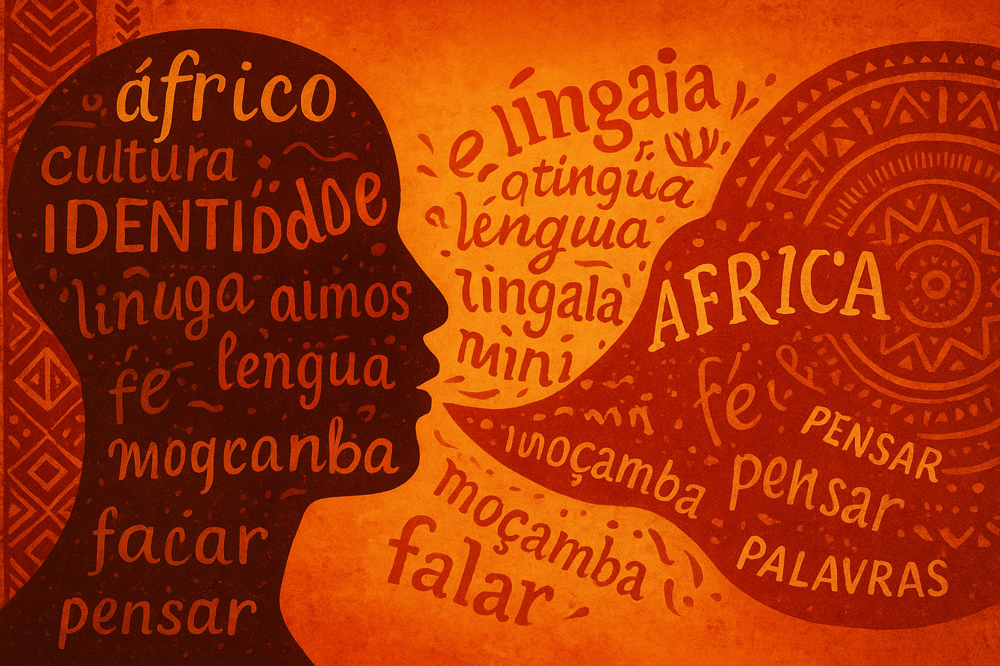

Misturas de Línguas e Identidade Cultural: o Português e as Línguas Africanas
O contato entre o português e as línguas africanas — como o kimbundu, o crioulo cabo-verdiano e outras línguas bantas — transformou profundamente a forma de falar e escrever nos países africanos de língua portuguesa. Essa convivência gerou novas expressões, ritmos e sentidos, refletindo a identidade cultural e a memória coletiva desses povos.
O português africano: uma língua viva e híbrida
Nas literaturas africanas lusófonas, o português não aparece como uma língua “pura” ou padronizada. Ao contrário, ele se mistura às línguas locais e ganha novas cores e sons. Essa fusão dá origem ao que se chama de hibridismo linguístico — o uso criativo e intencional de palavras e estruturas de origens diferentes.
Mais do que um recurso estilístico, essa mistura é uma forma de resistência cultural. Os escritores usam o português para representar realidades africanas, marcando a língua com a própria identidade e visão de mundo.
Autores e exemplos
Diversos autores africanos reinventam o português em suas obras, misturando-o com línguas nativas e expressões do cotidiano.
- Luandino Vieira (Angola): combina o português com o kimbundu em obras como Luuanda. Exemplos: “maka” (problema) e “kota” (pessoa mais velha).
- Mia Couto (Moçambique): cria neologismos e palavras híbridas, como “deslembrar” e “enxotar-se”, unindo invenção poética e fala popular.
- Orlanda Amarílis (Cabo Verde): integra o crioulo cabo-verdiano ao português em narrativas que retratam o cotidiano insular.
“A língua portuguesa é como um rio. Ela entra nas nossas terras e ganha o sabor do chão que pisa.”
— inspiração em Mia Couto
Fenômenos linguísticos
O contato entre línguas africanas e o português resultou em diferentes processos de criação linguística:
- Neologismos: novas palavras criadas a partir da fusão de idiomas. Exemplo: deslembrar (deixar de lembrar).
- Hibridismos: combinações de elementos de línguas distintas. Exemplo: kota, maka.
- Alternância de códigos: uso alternado de duas línguas em um mesmo texto ou fala, mostrando a pluralidade cultural do falante.
Esses recursos demonstram como a língua portuguesa é moldada pela convivência com outros sistemas linguísticos, tornando-se um espaço de diálogo entre culturas.
Atividade: explorando a mistura linguística
Objetivo: reconhecer e valorizar as palavras e expressões híbridas das literaturas africanas de língua portuguesa.
- Leitura: selecione trechos de autores como Mia Couto, Luandino Vieira ou Orlanda Amarílis.
- Identificação: destaque as palavras e expressões que não pertencem ao português padrão.
- Glossário: pesquise os significados e origens dessas palavras e crie um pequeno glossário.
- Criação: produza um microtexto (até 10 linhas) misturando o português com palavras de outra língua — africana, indígena ou regional.
Exemplo de microtexto:
“O kota me contou uma maka antiga. Disse que na aldeia, quando o sol dorme, o tempo cala. E eu deslembrei o medo.”
Reflexão final
A mistura de línguas nas obras africanas em português não é um erro, mas uma recriação da língua. É uma forma de dar voz às histórias, às memórias e à cultura de cada povo. A língua, assim, torna-se um instrumento de identidade, resistência e pertencimento.